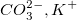
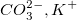
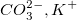
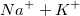
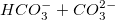

（ はスキップ）
（ はスキップ）シュティフダイアグラムは、水サンプルの主要なイオン組成を表現するための特殊なグラフタイプです。
Originのシュティフダイアグラムは、複数のY列を持つワークシートデータから作成します。
（ はスキップ）これらのY列はすべて、6つのノードを持つポリゴンとして作成されます。6つを超えるY列の場合、およびはノードが結合されます。
追加のアニオンまたは追加のカチオンの入力として扱える他の列を選択することもできます。また、追加のイオンがある場合は、変換係数を格納する列ラベル行を選択する必要があります。
元データを選択し、以下の方法のどちらかでplotstiffダイアログを開きます。
| 場所 | シュティフマップダイアグラムのシュティフ位置のXY範囲を指定します。このオプションは、メニューから作図：特殊グラフ：シュティフマップを選択したときに表示されます。 |
|---|---|
| イオン | 入力イオン: Na, K, Ca, Mg, Cl, HCO3, CO3, SO4を指定します。CO3を指定しない、またはKとCO3を指定しないことができます。これらの入力値の単位はmg/Lです。 |
| 追加のイオン | 追加のカチオン、アニオンを指定します。これらの値の単位はmg/Lです。 |
| 換算係数 | 変換係数は、イオン電荷を分子量で割ったものと同じです。単位はMeq/mgです。
|
| グループ | イオンのグループ情報として列ラベル行を指定します。「なし」を選択するということは、各列が1ポイントということです。列A、B、Fが1つのグループ、AとBが陽イオン、Fが陰イオンの場合、A + Bは陽イオンの1点、Fは陰イオンの点であり、これらは同じ垂直位置にあります。プロットする8つのイオンすべてが選択され、このコントロールが「なし」に設定されている場合、Originはシステムデフォルトのグループ化情報Na+K+Cl、Ca+HCO3+CO3、Mg+SO4を使用します。 |
| サンプルID | 列を選択して、ポリゴンにラベルを付けるためのサンプルIDを指定できます。 |
Stiff.otpu (Originプログラムフォルダにインストールされています)
複数の列を選択してシュティフダイアグラムをプロットすると以下のようになります。
シュティフダイアグラムを編集するには、作図の詳細ダイアログを開いて、以下のタブを使用します。